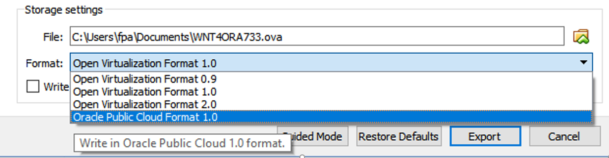

This was first published on https://www.dbi-services.com/blog/virtualbox-5-2-exports-the-vm-to-the-oracle-cloud/ (2017-10-21)
Republishing here for new followers. The content is related to the versions available at the publication date.
.
The new release of Oracle VM VirtualBox (aka VirtualBox) is there with a new functionality to export a VM to the Oracle Cloud Compute (aka Oracle Cloud Infrastructure). That can be interesting to prepare a VM on my laptop and move it to the Cloud to get it accessible from everywhere. Here’s my first try. In my opinion, it’s idea but probably need further evolution.
Here is what is new: in addition to .ova you can export to an Oracle Public Cloud image: 
This takes some time, as it compresses and writes all the disk images
The result is a .tar.gz for each disk attached to my VM. It is actually the image of the disk (.img) that is tar-ed and then gzipped. My VM (called VM101) had two disks (VM101-disk1.vdi and VM101-disk2.vdi). The export generated: VM101.tar.gz (containing VM101-disk002.img which looks like my first disk) and VM101-disk003.tar.gz (VM101-disk003.img which looks like my second disk)
Here is the content:
$ tar -ztvf VM101.tar.gz
-rw-r----- vboxopc10/vbox_v5.2.VBOX_VERSION_PATCHr11 4294967296 2017-10-19 21:23 VM101-disk002.img
$ tar -ztvf VM101-disk003.tar.gz
-rw-r----- vboxopc10/vbox_v5.2.VBOX_VERSION_PATCHr11 27917287424 2017-10-19 21:25 VM101-disk003.img
The .img is the image of the disk, with the partition and boot sector.
In the Oracle Public Cloud I can import this image: Compute Classic -> Images -> Upload Image
I upload only the image of the first disk, which contains the root filesystem:
And then I create the compute instance with the ‘Associate Image’ button:
Now, I’m ready to create an instance for it: Instance -> Customize -> Private Images
Then, I can define the shape (OCPU and memory), upload my SSH public key, and add storage (I could add my second disk here) and create the instance.
Here I’ve started it:
Unfortunately, my VM still has the network interface defined for my VirtualBox environment and then I have no way to connect to it. I hope that this feature will evolve to also export virtual network interfaces.
I have not seen any way to open a terminal on console. The only thing I can do is take snapshots of it:
Ok, so there’s a problem way before the network interfaces. My VM from Oracle VM VirtualBox (aka VirtualBox) now starts on Oracle VM (aka OVM) and besides the similar marketing name, they are different hypervisors (OVM running XEN). Probably a driver is missing to access block devices and maybe this Bug 21244825.
That’s probably all my tests on this until the next version. It is currently not easy to have a VM that can be started on different hypervisors and network environment.
Nothing very special here. Moving a VM from one hypervisor to the other is not an easy thing, but it is a good idea. And I hope that the integration into Oracle Cloud will be easier in the future with virtual disk and network interfaces. For the Oracle Cloud, it will be nice to have access to the console, but at least a screenshot may help to troubleshoot.
{kind=link}
{kind=link}
{kind=link}
{kind=link}
{kind=link}
{kind=link}
{kind=link}
{kind=link}
{kind=link}